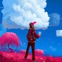

Owners
Dougley

Nationality: Dutch
Position: Main developer, Owner
Dougley is the main developer of WildBeast and leads TheSharks. He is the shot caller in the team and takes care of server things. He's an experienced developer and a decently big name in the Discord development community.
Mirrow

Nationality: Dutch
Position: Co-owner, secondary developer
Mirrow is the second owner of TheSharks and figures around the server doing a bit of this and that. Second WildBeast version 1.0.0 developer along with Dougley and Perpetucake. Top snek.
SuperStaff
Zaza

Nationality: Italian
Position: Developer, SuperStaff, database engineer
Zaza is head of development. He is a very active code contributor and regularly develops new features to WildBeast. Upholds LemonMC in our server cluster for WildBot. Hardened veteran of TheSharks.
Curtis

Nationality: Australian
Position: SuperStaff
Curtis is a SuperStaff member and occasional code contributor. Online when most others sleep due to being from the land down under. But don't mention him or you're going to have a bad time.
LWTechGaming

Nationality: Finnish
Position: SuperStaff, translations maintainer, head documentation writer
LW is the language wizard of TheSharks. He maintains the translations for WB. Perhaps best known for writing and maintaining our documentation. In addition to this he does web development with Dougley. Jack of all trades.
Admins
Nightex

Nationality: German
Position: Administrator, Staff Patron, Translator
Nightex is the one that helps keep the server up financially by being a Patron. He also makes code contributions and has made the German translation for WildBeast. Also frequent user of forsenE.
Nenkai

Nationality: French
Position: Administrator, Translator, Contributor
Nenkai, formerly known as TheKill69, is the most active contributor to WildBeast GitHub repository rivaled only by Dougley. He provides mainly bugfixes and runs his own WildBeast fork, Sinister. Also the author of the French translation for WB.
Dean

Nationality: Australian
Position: Administrator
Dean, better known as deansheather, is an administrator for WildBeast. He is perhaps best known for running Discord.FM. His main contribution to the project is likely giving his voice to the Deanpower command.
Kayo

Nationality: American
Position: Administrator, Database engineer
Kayo is an administrator and server provider. She doesn't work a lot on WildBeast but in turn does server engineering and upholds Kayo in the server cluster. The server wizard.
Moderators
Pepe

Nationality: Dutch
Position: Moderator, Contributor
Pepe is a moderator and code contributor to WildBeast. And possibly the rarest Pepe in the world, in his own words.
Piero

Nationality: American
Position: Moderator
Piero is the newest addition to our staff. He mostly does support work and answers questions of WildBeast users. The team's greenhorn.
jagrosh

Nationality: American
Position: Moderator
Jagrosh is a moderator that figures around in the server every now and then, mostly exercising developmental collaboration. Best known for creating the Discord bot Spectra and its subsidiary + spinoff projects.
link2110

Nationality: American
Position: Moderator
Link is a moderator for WildBeast and is perhaps more known for running /r/LoveLive and moderating Discord.FM. If you ever catch a glimpse of him, you got lucky.